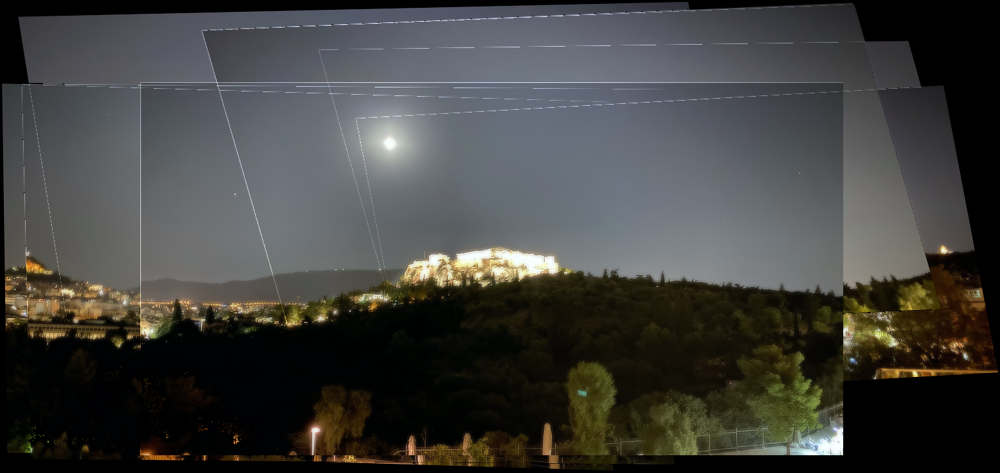
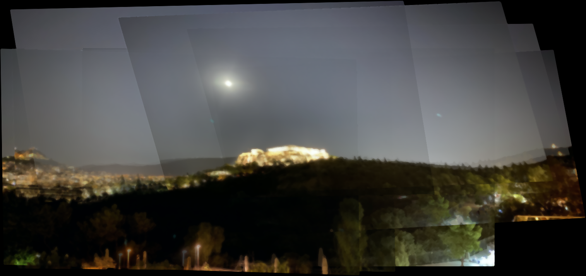
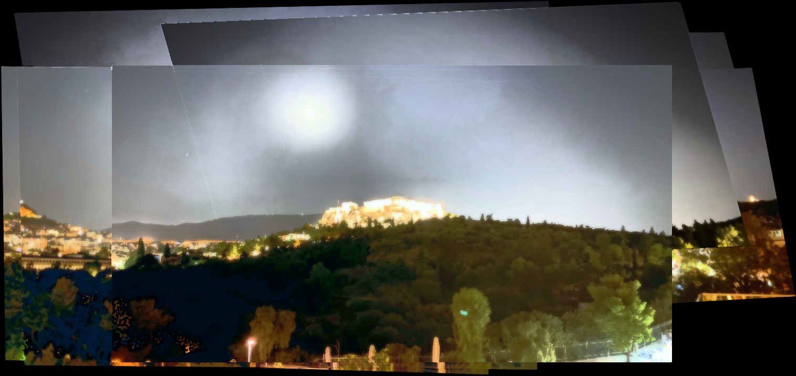
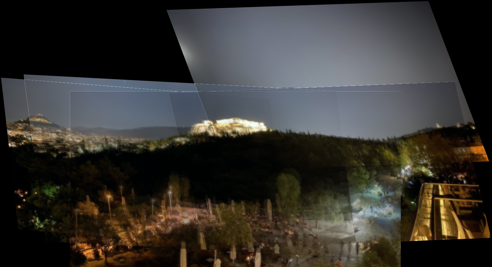
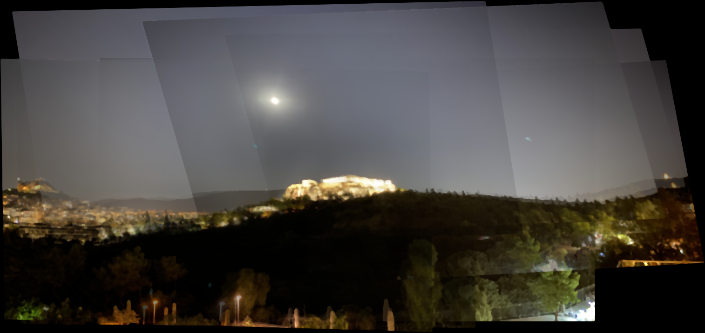
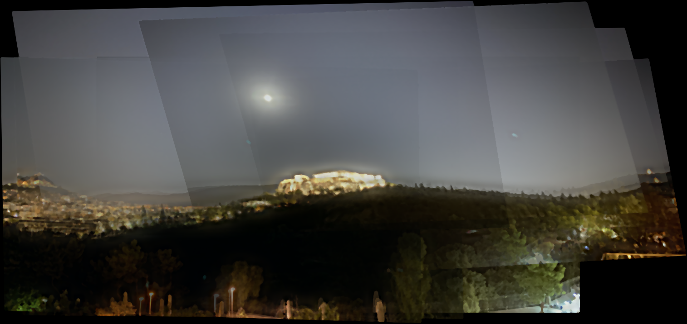

For this checkpoint, I have fully implemented the required parts of Project 5a, and also experimented with various blending techniques, including feathering, median filtering, and two-band decomposition (blurring the lower frequencies, while keeping the higher ones sharp). I have also experimented with various pre-processing techniques, including white balancing and histogram equalization. To compute the homography matrix, I used least squares. The figues below demonstrate the results, at various different settings.
|

Vanilla |

Vanilla + Median Blur |

Histogram Equalization (ugh...) |
|

"Cross-Fade" Interpolation |
"Cross-Fade" Interpolation + Median Blur x3 |
"Cross-Fade" Interpolation + Median Blur x5 |
|

No Frequency Decomposition |

Two-Band Decomposition |
⸸♡☮